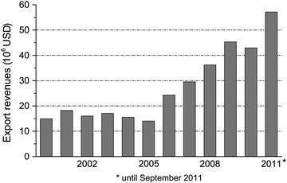
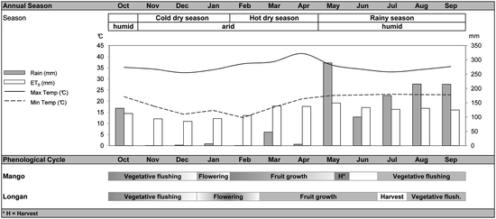
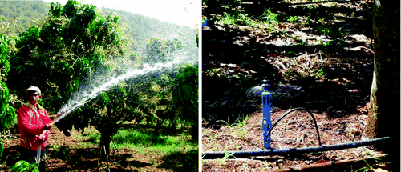
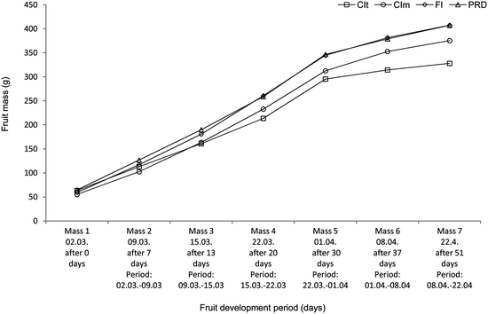
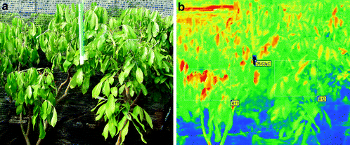
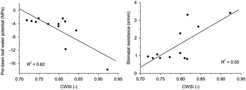
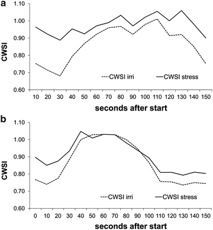

6.1 Introduction
The irrigation of tropical fruit trees is important in the northern part of Thailand as most fruit grow during the dry season, when the cloudless skies provide high levels of radiation and the dry environment slows the growth of pests and fungi. Under these conditions, premium fruit can only be produced under an intensive water and nutrient management regime. In this chapter, our focus will be on the production of mango and longan fruit.
In recent years, water availability has become increasingly problematic in Thailand due to climate change, with increasing average annual temperatures occurring along with more frequent weather abnormalities (Jintrawet 2011). Farmers in northern Thailand are confronted with periodic droughts, such as in 2010 when the water stored in reservoirs was not enough to irrigate mangos up to the harvest, or with early and abundant rainfall, as in 2011, which led to flooding across the country. Table 6.1 shows that during the mango season in 2010, the average maximum temperature was more than three degrees higher than the long-term average, while rainfall was about half the average, yet in 2011 rainfall was more than twice the long-term average. At the time of writing this chapter, farmers are reporting that abnormal rainfall in January 2012 may be about to destroy a good part of the fruit set.
Table 6.1
Air temperature (Ta), relative humidity (RH) and rainfall during the mango fruit growing season (February to April) for the years 2010 and 2011, as compared to the previous 10 year average (1997–2007)
Mean Tamax (°C) | Mean Tamin (°C) | Mean Ta (°C) | Mean RH (%) | Rainfall (mm) | |
|---|---|---|---|---|---|
1997–2007 | 35.0 | 18.3 | 26.6 | 62.4 | 89.0 |
2010 | 38.5 | 16.8 | 26.1 | 65.1 | 47.2 |
2011 | 35.3 | 18.6 | 25.4 | 70.3 | 200.4 |
As water is becoming a scarce resource, so deficit irrigation strategies have been developed to use water more efficiently. Deficit irrigation (DI) strategies deliberately allow crops to sustain some degree of water deficit and sometimes, some yield reduction, through a significant reduction in water requirements. To date, two methods of DI have been used to save water within the fruit production sector: (1) Regulated deficit irrigation (RDI) in which – in accordance with the phenological stage of the plant – a certain percentage of potential crop evapotranspiration (ETC.) is replaced by irrigation applied over the entire root-zone, and (2) Partial root-zone drying (PRD), in which at each irrigation event only one side of the tree row is watered, with the other side left to dry-out to a predetermined level before being irrigated again.
DI is primarily an economic approach towards optimizing water allocation. Small irrigation amounts increase crop evapotranspiration (ET) more or less linearly, up to a point where the relationship becomes curvilinear because part of the water applied is not used in ET and is lost. At a certain point, yields reach their maximum value and additional amounts of irrigation do not increase them any further. The location of that point is not easy to define and; thus, when water is not limited or is cheap, irrigation is applied in excess to avoid the risk of a yield penalty. However, allocating a suboptimal amount of water can decrease yields to a greater extent than irrigation water is saved (Fereres and Soriano 2007). A principle of the RDI technique is that plant sensitivity to water stress is not constant during the growing cycle, and that intermittent water deficits during specific periods may actually improve water use efficiency (WUE). Under an RDI strategy, irrigation is used to maintain plant water status within certain limits of deficit during certain phases of the crop cycle, normally when fruit growth is least sensitive to water reductions. The major disadvantage of RDI is that it is required to maintain a plant’s water status within narrow limits, which is difficult to achieve in practice (Costa et al. 2007).
An alternative strategy is PRD, which involves the exposure of roots to alternate drying and wetting cycles, enabling plants to grow with reduced stomatal conductance but without showing signs of water stress. This technique is based on plant root to shoot chemical signaling, a process that influences shoot physiology and can be operated in drip- or furrow-irrigated crops. Theoretically, roots on the watered side of the soil will maintain a favorable plant water status, while dehydration on the other side will promote the synthesis of hormonal signals which will reach leaves via the transpiration stream and further reduce stomatal conductance. This will decrease water loss and vegetative growth, while leaving fruit yields affected only to a minor extent – meaning that WUE can be increased (e.g., Spreer et al. 2007).
6.2 Irrigated Mango Production
Mango (Mangifera indica L.) is a commercially important tropical fruit and morphologically is a non-deliquescent drupe – a dicotyledonous fruit tree within the Anacardiaceae family, and originates from the Indo-Burmese region. Mango is one of the most important tropical fruit in Asia (Tharanathan et al. 2006), and has a long history of cultivation in Thailand. However, it is only recently that its importance as an export product has risen and that irrigation of this drought-tolerant tree has been considered worthwhile. To understand the requirements of modern mango irrigation activities in Thailand, it is worthwhile considering the development of the mango export industry.
6.2.1 Mango Exports from Thailand
Mango is an important export fruit for Thailand, for since 2005, the revenues generated from mango exports have more than doubled, reaching more than 55 million USD in 2011 (Fig. 6.1).

Fig. 6.1
Mango export revenues in Thailand since the year 2000. Based on data from the Office of Agricultural Economics, Bangkok in Thailand (http://www.oae.go.th)
Of the more than 50 described mango varieties grown in Thailand, four are grown for export: Nam Dokmai, Nam Dokmai Si Thong, Maha Chanok and Chok Anan (DOA 2012). For the export business, year round production is necessary to satisfy demand, and this is achieved due to staggered production activities based on chemical flower induction using paclobutrazol (Hegele et al. 2006), as practiced across many intensively managed orchards in central Thailand. However, in the northern parts of the country, climate peculiarities still impose restrictions on year round production. Among the different mango varieties Chok Anan takes a special position, as it is the only variety which flowers naturally up to three times per year. However, its importance in terms of exports has decreased, as, due to phytosantitary problems in the past, it cannot be sold in Japan, which is the most important mango export market for Thailand. On a national level, constant supply can be obtained through sequential on-season production at different locations distributed over different climate zones in the country, and nowadays, 20 grower groups operate in well-organized clusters, these being: joint ventures among growers, the Department of Agriculture (DOA), the Department of Agricultural Extension (DOAE), chemical supply companies, and exporters (Chomchalow and Songkhla 2008). Thus, on-season production still contributes the greatest share to total mango production in Thailand.
6.2.2 Influence of Irrigation on Mango Yield
Mango is rather drought tolerant and so fruit growth can take place even under extreme drought conditions; however, high yields of a good quality can only be obtained through the use of irrigation. In general, irrigation affects yield formation in two ways: by enhancing fruit growth or by increasing the number of fruit. The latter may be the result of an improved fruit set after flowering, or reduced fruit fall at later stages. Different studies have shown that yield differences between irrigation treatments are mainly related to the number of fruit per tree (Pavel and de Villiers 2004; Duran Zuazo et al. 2011). In one study, a high level of correlation between yield and the size of the fruit set (R2 = 0.74) was found, rather than between yield and the retention rate (R2 = 0.08). In the same study significant differences in fruit drop were reported between irrigation treatments, while still concluding that the main determinant for fruit drop was the size of the fruit set (Spreer et al. 2009). In Vietnam, Roemer et al. (2011) found no correlation between irrigation and fruit drop in mango, but rather attributed it to climatic peculiarities.
In commercial mango production activities, the influence of irrigation on the size of the fruit set and, therefore, on the final number of fruits harvested, is small, as fruits are thinned about 6 weeks after the fruit set has developed, which is after the major fruit drop has occurred (Roemer et al. 2011). As a consequence, the overall influence of irrigation on total mango yields is minor, so the main focus of irrigation research should be the influence of irrigation activities on fruit growth and fruit size distribution at harvest time, as this determines the production value received by the growers, with a 40–50 % higher price received for premium grade mangos. High quality mangos are defined as having a desirable size, a clean skin, a compliant color and a good shape (Chomchalow and Songkhla 2008).
6.2.3 Influence of Irrigation on Mango Fruit Growth
Figure 6.2 shows the typical generative cycle for on-season production activities. After the fruit set has developed, rapid cellular growth takes place, and then, with a view to better fruit growth the number of fruits per panicle is reduced by singling out fruits with a length of about 7 cm around 6 weeks after the fruit set has developed. The factors influencing fruit growth are manifold. The genetic composition of the cultivar is the most important factor, followed by many other determinants such as fruit load, vegetative growth and the carbon/nitrogen ratio, which is influenced by environmental variables such as wind, water, light and temperature. Management practices, such as irrigation, fertilizer application and the singling-out of fruits, as well as soil type, also affect fruit growth (Lechaudel and Joas 2007).

Fig. 6.2
On-season calendar of Nam Dokmai mango in northern Thailand
Fruit growth was monitored dependent on the different irrigation practices used, and although mango production in Thailand has become increasingly professional over recent years, most farmers still have no proper irrigation facilities. As a result, it is common practice to use a hose carried from one tree to another, not only a time intensive task but an activity that makes any technical scheduling impossible, resulting in water loss due to non-uniform water distribution (Fig. 6.3). Furthermore, the flow rates produced by hoses are mostly higher than soil infiltration rates; thus, on sloping land run-off occurs and irrigation water is wasted.

Fig. 6.3
Left-hand picture: ‘Washing off’ wilted flowers after the fruit set has developed. Using traditional irrigation techniques, the hose is placed underneath the tree. Right-hand picture: Micro-sprinkler placed laterally for PRD irrigation
In the studies here, then as the impact of irrigation scheduling on fruit growth varies during different phenological stages, so on-tree fruit development was monitored by measuring the typical dimensions of the sample fruit and estimating the fruit mass based on an equation originally developed for the mass estimation of Chok Anan mango fruit (Spreer and Müller 2011) and later on confirmed with Nam Dokmai fruit (Schulze et al. 2012). It was shown that, especially during the period of rapid fruit growth, results varied based on the irrigation practices used (Fig. 6.4). While conventional irrigation as used by the farmers resulted in a lower fruit growth, scheduled irrigation using micro-sprinklers produced larger fruit, and the fruit continued growing right up until being harvested. This had already observed in earlier experiments (Spreer et al. 2009) and points to the importance of irrigation, even in the late growth stage, unless sufficient rainfall can be guaranteed. A machine learning approach was conducted based on 3 years yield, weather and irrigation data, and this confirmed that irrigation is most relevant for yield formation in the period after the fruit set has developed and shortly before the harvest (Fukuda et al. 2012).

Fig. 6.4
Fruit growth of Nam Dokmai mangoes under different irrigation practices: (1) farmers’ irrigation with a hose (CIt), (2) farmer’s irrigation with micro-sprinklers (CIm), (3) full irrigation (FI), and (4) partial root-zone drying (PRD)
6.2.4 Introduction of Micro-irrigation to the Mango Production Process
Irrigation using hoses placed underneath the mango trees is still commonly practiced in northern Thailand. While the installation costs of this method are low, running costs are high in terms of electricity and labor. Apart from a volume independent access fee, irrigation water is not priced in northern Thailand; however, a previous study showed that under these conditions, micro-sprinkler irrigation based on a climatic water balance can improve farmers’ revenues after a rather short pay-back time of 4.6 years, while PRD only results in higher returns as compared to full irrigation if a water price is assumed (Satienperakul et al. 2009).
By comparing traditional techniques and micro-sprinklers, we have found that the introduction of micro-sprinklers into irrigated mango production activities in northern Thailand has the potential to increase both yields and WUE (Spreer et al. 2011), and that farmers can well handle and operate such systems, even if they receive no additional extension in terms of irrigation scheduling. Interestingly, in our studies, farmers’ experiences matched quite well with the calculated irrigation water requirement. If scheduling is done based on a climatic water balance, it is possible to further increase WUE and obtain fruit of a more uniform shape and size. As fruit size is a crucial factor in the marketing of exports, we believe that farmers who produce for export need to rely on improved irrigation scheduling to exploit the full benefits of installing a micro-irrigation system. It is; therefore, considered necessary to support the introduction of improved micro-sprinkler systems on a communal level and, at the same time, establish an irrigation extension service which can advise farmers on water efficient irrigation techniques, including the option of using deficit irrigation during extended drought periods (Schulze et al. under review).
6.3 Irrigated Longan Production
In contrast to mango, longan (Dimocarpus longan Lour.) is usually not exported fresh, but mainly in a dried form. The main importing country for dried longan from Thailand is China. The most important quality parameters – size and color – develop best with on-season production during the dry season. As longan trees are sensitive to drought, irrigation is essential.
6.3.1 General Management
Longan is a subtropical fruit tree indigenous to Southeast Asia. Together with lychee (Litchi chinensis Sonn.), it is the most popular member of the Sapindaceae family, which has over 2,000 species and 150 genera (Menzel and Simpson 1991). Thailand is currently the biggest longan producer in the world, with drained rice fields and gently sloping fields in the foothills of the upper Ping River Basin in northern Thailand being the main production areas. Naturally, longan trees grow up to 20 m in height, but on Thai plantations, they are typically grown in a 10 × 10 m pattern, reaching 7–10 m in height. Previous research on new pruning techniques recommended growing smaller trees (Manochai et al. 2008), but this advice has not yet been widely followed in practice. Longan flowering can reliably be induced through the application of potassium chlorate, and as a result, production is possible all year round (Manochai et al. 2005). However, flower induction and management is expensive and weather dependent (Ongprasert et al. 2010b), plus incomplete degradability of potassium chlorate in the soil leads to a lower response rate, which in turn results in ever increasing application rates (Ongprasert et al. 2010a). Therefore, and because size and color develop best during the dry season, presently about 80 % of longan fruit is produced during the ‘on-season’, which starts with flowering in February and ends with the fruits being harvested in July. Longan trees are particularly sensitive to drought during the flowering and early fruit development stages (Menzel and Waite 2005), so irrigation management is crucial in growing regions which have a distinctly summer rainfall pattern (Diczbalis et al. 2010). As on-season flowering and fruit development coincides with the dry season in Thailand, high fruit yields can only be obtained using irrigation. Irrigation water requirements are calculated based on a climatic water balance: ETc. = ET0 · kc, and using a crop coefficient (kc) of 0.83, based on empirical data from Diczbalis (2002) or 0.85, as determined by Spohrer et al. (2006), based on physiological measurements of the lychee trees and assuming a low evaporation rate (ke = 0.05) – as achieved by micro-irrigation.
6.3.2 Deficit Irrigation in Longan
As limited water resources create an obstacle for increased longan production, deficit irrigation strategies have lately been investigated, and one experiment with commercial orchards in Thailand found that PRD with 66 % irrigation of calculated ETc. did not cause a significant reduction in yield or fruit quality as compared to a 100 %-watered control (Ongprasert et al. 2007). As a result, under conditions of extreme drought, DI can help ensure stable yields, added to which, lower irrigation water use can reduce electricity costs for water pumping, even when water is free of costs (Satienperakul et al. 2006). In a previous study, under controlled conditions PRD (with 60 % of ETc.) was applied to 3- year old longan trees grown under a plastic shelter. The trees subjected to PRD showed stunted vegetative growth without noticeable foliar wilt, and during the 28 weeks of the experiment, the control trees gave two flushes, while those subjected to PRD gave only one flush but with a higher number of leaves and shorter shoots than those developed during the first flush for the control (Ongprasert and Wiriya-alongkorn 2009). Furthermore, another study found reduced concentrations of phosphorus and potassium in the leaf tissues of PRD irrigated longan trees (Srikasetsarakul et al. 2011), as compared to previous reports on the nutrient content of healthy trees (Khaosumain et al. 2005). These findings on reduced biomass formation may indicate similar long-term effects in longan as has been reported for other tree species, such as the lower crown volume found in almonds (Egea et al. 2010) and the reduced root-biomass growth shown in peach trees (Abrisqueta et al. 2008). However other studies carried out under the same climatic conditions as those found in Thailand, which has an intensive rainy season, did not reveal any negative impacts on yields in the long-run (Spreer et al. 2009). In light of this, there is a need for more research to be done on the longan tree’s response to drought stress.
6.3.3 Water Stress Monitoring
Monitoring water stress during fruit tree production is a rather complex task, as – other than in most annual crops – it is not the absolute yield or total biomass but rather quality that determines the success of the producer. Depending on the fruit species involved, the marketable yield is an effect of inner and outer quality parameters. Thus, deficit irrigation is carried out, not only to save water, but also to enhance desired properties such as acidity in wine production or obtaining a better fruit to flesh ratio, as is the case with mango (Spreer et al. 2007). In longan, however, the absence of water stress during the fruit growing period is fundamental for ensuring a marketable yield as otherwise fruit crack occurs as a result of osmotic imbalance. Rapid and non-invasive methods able to detect water stress in longan at the early growth stages are thus required.
One method which in recent years has become increasingly important in the field of water stress monitoring is thermal imaging. This method is based on the fact that leaves under water stress close their stomata, which results in a lower transpiration cooling rate and, as a consequence, a higher canopy temperature (Tc). Since first being documented (Jones 1999), this method has been researched for different crops and different applications (e.g., Zia et al. 2009; Romano et al. 2011), and has turned out to be a promising method for use with the irrigation of longan trees. Under controlled conditions, it has been shown that, using thermal imaging, water stress can be detected early-on and visualized (Fig. 6.5).

Fig. 6.5
(a) Real color image of a stressed (left) and a well-watered (right) longan tree, and (b) thermal image of the same trees showing elevated temperatures on the stressed tree
To quantify the level of water stress using IR thermometry, several methods have been reported. One proposal was to consider the accumulated difference between air temperature (Ta) and canopy temperature (Tc) in order to calculate stress degree days (Idso et al. 1981), but this method does not take into account vapor pressure deficit, net radiation or wind speed. Therefore, a ‘Crop Water Stress Index’ (CWSI) was introduced, an index which correlates canopy temperature with upper and lower boundary temperatures. The temperature of a non-transpiring leaf (e.g., coated with Vaseline) represents the highest temperature (Tmax) under the prevailing environmental conditions, while a water-sprayed leaf determines the maximum cooling effect by transpiration (Tmin). The CWSI is determined as CWSI = (Tc−Tmin)/(Tmax−Tmin), and is inversely correlated with leaf water potential (Yuan et al. 2004).
In one study, this correlation was also found when analyzing longan trees subjected to different levels of water stress (Fig. 6.6).

Fig. 6.6
Corrlation of the CWSI – based on thermal imaging, with pre-dawn leaf water potential (left) and stomatal resistance (right) for five water-stressed and five well-watered longan trees (Wiriya-Alongkorn et al. 2012)
However, even when references are used, the measurements are dependent on environmental influences. Especially if the weather is windy, measuring is difficult, as has been shown under experimental conditions. In one study, while applying soft wind to a canopy of longan trees, a cooling effect was observed for Tc under stress and Tmax, and to a lesser extent for Tmin. A cooling effect on the irrigated tree was not noticed, and as a consequence, differences in the CWSI between irrigated and stressed treatments decreased, but were still visible. The cooling effect was more pronounced at a moderate wind speed, and the leaf temperature of the stressed tree dropped to the same level as the irrigated tree. Consequently, the CWSI for both treatments was similar, to the extent that the stressed and unstressed treatments could not be distinguished based on the CWSI (Fig. 6.7).

Fig. 6.7
Changes in the CWSI after the application of a light (a) and moderate (b) wind to stressed and unstressed longan trees
6.4 Conclusion
In order to improve the level of competitiveness of fruit production activities in Thailand, and ensure a high export potential, one which can contribute to farmers’ incomes and to rural development, irrigation can play a potentially important role. To do this, irrigation needs to ensure the appropriate use of existing water resources, as their availability is likely to become increasingly insecure in the coming years due to climatic peculiarities, which have tended to increase over the last few decades. Irrigation needs to be planned and based on objective parameters, such as plant water stress indicators, to ensure an optimal supply of water and nutrients to trees and so guarantee product quality. The method with the greatest potential in terms of achieving this goal is micro-irrigation, in combination with irrigation scheduling based on a climatic water balance. DI strategies offer the potential to increase WUE, but this may have a direct impact on farmers’ incomes only when applied on a communal scale. To put this into practice, methods of plant stress monitoring, together with climatic water balance calculations, can support local planning processes. Thermal imaging, which is too expensive to be applied by a single farmer, could play a role in communal irrigation planning and water allocation activities, so as to exploit the benefits of the increased WUE achieved by the general application of DI strategies. However, future research should focus on plant specific parameters and the larger-scale applicability of stress monitoring technologies. Extension and farmer education will also be needed in order to raise awareness of the problems involved, and to convey the knowledge needed to apply modern water saving irrigation methods in practice.
Acknowledgments
This work was financed by Deutsche Forschungsgemeinschaft (DFG), within the collaborative research program ‘Sustainable rural development in the mountainous regions of Southeast Asia’ (SFB 564), as well as the National Research Council of Thailand (NRCT) and the Fiat Panis Foundation, Ulm. Special thanks go to Asst. Prof. Dr. Noporn Boonplod, Dept. of Horticulture, Mae Jo University, as well as Umavadee Srikasetsarakul, Dr. Korawan Sringkarm and Assoc. Prof. Dr. Pittaya Sruamsiri, Faculty of Agriculture, Chiang Mai University, for their kind cooperation. The authors also extend their gratitude to Preecha Saepueng, Wanwisa Jantika and Eakapan Loongbooy for their assistance in the field and with greenhouse experiments, to Wanwarang Pattanapo and Wipawadee Saepueng for their technical support, and to SuwimonWicharuk for soil analyses. The kind cooperation of Charoen Kumsupa, Thongdee Tasai and Nan Thongrat from the Phrao Mango Farmers’ Cooperative, and Rewat Promjom from Netafim Thailand, is gratefully acknowledged. Finally, thanks go to Gary Morrison for English language editing and to Peter Elstner for improving the layout and for fruitful discussions.
Open Access. This chapter is distributed under the terms of the Creative Commons Attribution Non-commercial License, which permits any noncommercial use, distribution, and reproduction in any medium, provided the original author(s) and source are credited.
References
Abrisqueta JM, Mounzer O, Alvarez S, Conejero W, Garcia-Orellana Y, Tapia LM, Vera J, Abrisqueta I, Ruiz-Sanchez MC (2008) Root dynamics of peach trees submitted to partial rootzone drying and continuous deficit irrigation. Agr Water Manage 95:959–967CrossRef
Chomchalow N, Songkhla P (2008) Thai mango export: a slow-but-sustainable development AU. J Technol 12(1):1–8
Costa JM, Ortuno MF, Chaves MM (2007) Deficit irrigation as a strategy to save water: physiology and potential application to horticulture. J Integr Plant Biol 49(10):1421–1434CrossRef
Diczbalis Y (2002) Longan improving yield and quality. Report No. 1440–6845, Barton ACT: Rural Industries Research and Development Corporation, Kingston, Australia
Diczbalis Y, Nicholls B, Lake K, Groves I (2010) Sapindaceae production and research in Australia. Acta Hortic 863:49–57
DOA (2012) The Thai fruit journal – mango. Department of Agriculture (DOA) of Thailand, pp 7–8
Duran Zuazo VH, Rodriguez Pleguezelo CR, Tarifa DF (2011) Impact of sustained-deficit irrigation on tree growth, mineral nutrition, fruit yield and quality of mango in Spain. Fruits 66(4):257–268CrossRef
Egea G, Nortes PA, Gonzalez-Real MM, Baille A, Domingo R (2010) Agronomic response and water productivity of almond trees under contrasted deficit irrigation regimes. Agr water Manage 97:171–181CrossRef
Fereres E, Soriano MA (2007) Deficit irrigation for reducing agricultural water use. J Exp Bot 58(2):147–159CrossRef
Fukuda S, Spreer W, Yasunaga E, Yuge K, Sardsud V, Mueller J (2012) Random forests modelling for the yield estimation of mango (Mangifera indica L. cv. Chok Anan) under different irrigation regimes. Agr Water Manage. doi:10.1016/j.agwat.2012.07.003 (in press)
Hegele M, Bangerth F, Naphrom D, Sruamsiri P, Manochai P (2006) Control of flower induction in tropical/subtropical fruit trees by phytohormones using the example of longan and mango. Acta Hortic 727:217–226
Idso SB, Jackson RD, Pinter PJ, Reginato RJ, Hatfield JL (1981) Normalizing the stress-degree-day parameter for environmental variability. Agr Meteorol 24:44–45
Jintrawet A (2011) El Nino–Southern oscillation and rice production in Thailand during 1980–2002 period. In: International conference on the role of agriculture and natural resources on global changes (ANGC2011), Chiang Mai
Jones HG (1999) Use of thermography for quantitative studies of spatial and temporal variation of stomatal conductance over leaf surfaces. Plant Cell Environ 22:1043–1055CrossRef
Khaosumain Y, Sritontip C, Changjaraja S (2005) Nutritional status of declined and healthy Longan trees in Northen Thailand. Acta Hortic 665:275–280
Lechaudel M, Joas J (2007) An overview of preharvest factors influencing mango fruit growth, quality and postharvest. Braz J Plant Physiol 19(4):287–298CrossRef
Manochai P, Sruamsiri P, Wiriya-alongkorn W, Naphrom D, Hegele M, Bangerth F (2005) Year around off season flower induction in longan (Dinocarpus longan Lour.) trees by KClO3 applications: potentials and problems. Scientia Hortic 104:379–390CrossRef
Manochai P, Saritat S, Suton W, Ussahatanonta S (2008) Effects of canopy height reduction on leaf flushing, flowering and yield of longan cv. E-Daw. J Agr Sci 39:303–312
Menzel CM, Simpson DR (1991) Lychee cultivars around the world. In: Australian lychee yearbook, vol 1. Australian Lychee Growers Association, Queensland, pp 30–34
Menzel CM, Waite GK (2005) Litchi and longan, botany, production and uses. CABI Publishing, Oxfordshire/Cambridge, MACrossRef
Ongprasert S, Wiriya-alongkorn W (2009) Yield and vegetative growth of longan subjected to partial root-zone drying irrigation. J Agr Res Ext 26:8–17
Ongprasert S, Spreer W, Wiriya-Alongkorn W, Ussahatanonta S, Köller K (2007) Alternative techniques for water-saving irrigation and optimised fertigation in fruit production in Northern Thailand. In: Heidhues F, Herrmann L, Neef A, Neidhart S, Pape J, Sruamsiri P, Thu DC, Valle Zárate A (eds) Sustainable land use in mountainous regions of Southeast Asia: meeting the challenges of ecological, socio-economic and cultural diversity. Springer, Berlin/Heidelberg/New York/London/Paris/Tokyo, pp 120–133CrossRef
Ongprasert S, Wiriya-alongkorn W, Spreer W (2010a) Degradation and movement of chlorate in longan plantations. Acta Hortic 863:367–374
Ongprasert S, Wiriya-alongkorn W, Spreer W (2010b) The factors affecting longan flower induction by chlorate. Acta Hortic 863:375–380
Pavel EW, de Villiers AJ (2004) Responses of mango trees to reduced irrigation regimes. Acta Hortic 646:63–68
Roemer M, Hegele M, Wünsche JN, Huong PT (2011) Possible physiological mechanisms of premature fruit drop in mango (Mangifera indica L.) in Northern Vietnam. Acta Hortic 903:999–1006
Romano G, Zia S, Spreer W, Sanchez C, Cairns J, Araus JL, Müller J (2011) Use of thermography for high throughput phenotyping of tropical maize adaptation in water stress. Comput Electron Agr 79:67–74CrossRef
Satienperakul K, Spreer W, Wiriya-Alongkorn W, Ongprasert S, Mueller J (2006) Economic assessment of water-saving irrigation methods in longan production in Northern Thailand. Deutscher Tropentag2006, prosperity and poverty in a globalised world – challenges for agricultural research, Bonn, 11–13 Oct 2006
Satienperakul K, Manochai P, Ongprasert S, Spreer W, Müller J (2009) Economic evaluation of different irrigation regimes in mango production in northern Thailand. Acta Hortic 831:293–300
Schulze K, Srikasetsarakul U, Spreer W, Ongprasert S, Mueller J Irrigated mango (Mangifera indica, cv. Nam Dokmai) production in northern Thailand – cost and returns under extreme weather conditions. Agr Water Manage (under review)
Schulze K, Srikasetsarakul U, Spreer W, Nagle M, Sardsud V, Mueller J (2012) Application of an equation for size-mass-correlation for Nam Dokmai mangoes for automated sorting processes. In: International science conference on “sustainable land use and rural development in mountain areas”, University of Hohenheim, Stuttgart, 16–18 Apr 2012
Spohrer K, Jantschke C, Herrmann L, Engelhardt M, Pinmanee S, Stahr K (2006) Lychee tree parameters for water balance modeling. Plant Soil 284(1–2):59–72CrossRef
Spreer W, Müller J (2011) Estimating the mass of mango fruit (Mangifera indica, cv. Chok Anan) from its geometric dimensions by optical measurement. Comput Electron Agr 75:125–131CrossRef
Spreer W, Nagle MC, Neidhart S, Carle R, Ongprasert S, Mueller J (2007) Effect of regulated deficit irrigation and partial rootzone drying on the quality of mango fruits (Mangifera indica L., cv. ‘Chok Anan’). Agr Water Manage 88(1–3):173–180CrossRef
Spreer W, Ongprasert S, Hegele M, Wünsche JN, Müller J (2009) Yield and fruit development in mango (Mangifera indica, L., cv. Chok Anan) under different irrigation regimes. Agr Water Manage 96:574–584CrossRef
Spreer W, Schulze K, Srikasetsarakul U, Ongprasert S, Müller J (2011) Introduction of micro-sprinkler systems to mango production into the uplands Northern Thailand. In: CIGR 2011 conference on sustainable bioproduction, Tokyo, 19–23 Sept 2011
Srikasetsarakul U, Sringarm K, Sruamsiri P, Ongprasert S, Wiriya-alongkorn W, Spreer W, Müller J (2011) Biomass formation and nutrient partitioning in potted longan trees under partial rootzone drying. Acta Hortic 889:587–592
Tharanathan RN, Yashoda HM, Prabha TN (2006) Mango (Mangifera indica L.), “The King of Fruits” – an overview. Food Rev Int 22(2):95–123CrossRef
Wiriya-Alongkorn W, Spreer W, Ongprasert S, Spohrer K, Pankasemsuk T, Müller J (2012) Detecting drought stress in longan trees using thermal imaging. Maejo Int J Sci Techn. Submission number 1013 (Submitted)
Yuan G, Luo Y, Sun X, Tang D (2004) Evaluation of a crop water stress index for detecting water stress in winter wheat in the North China Plain. Agr Water Manage 64:29–40CrossRef
Zia S, Spohrer K, Merkt N, Wenyong D, He X, Müller J (2009) Non-invasive water status detection in grapevine (Vitis vinifera L.) by thermography. Int J Agr Biol Eng 2:46–54